Práctica 3.2
Despliegue de aplicaciones con Node Express y en Netlify
Javier Rider Jimenez
1. Creación de una aplicación React
Lo primero que debemos hacer es crear una aplicación React. El código de la aplicación ha sido facilitado. los archivos han sido guardados en la correspondiente carpeta de proyecto.
a continuación inicializamos node.js con el comando:
npm init
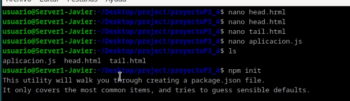
ahora ejecutamos la aplicación con el comando:
node aplicacion.js

y como podemos ver la aplicación se ejecuta correctamente.

2. Despliegue de la aplicación en Netlify
En una nueva carpeta de proyecto, clonamos de github el repositorio para realizar la practica. Nota, inicializar el reposititrio en la carpeta correcta
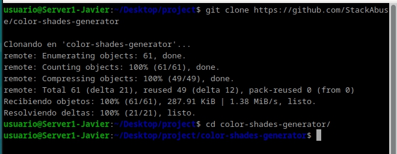
Ahora debemos instalar las dependencias de la aplicación dentro de la carpeta con el comando:
npm install netlify-cli -g

Ahora debemos loguearnos en netlify con el comando. pero no debemos iniciar sesion con github
netlify login
Ahora debemos desplegar la aplicación con el comando:
netlify deploy


con el enlace que nos proporciona netlify podemos acceder a la aplicación desplegada.

y como podemos ver la aplicación se ha desplegado correctamente.
3. Proceso de despliegue en Netlify
En la pagina de netlify, debemos conseguir un token de autenticación para poder desplegar la aplicación. con el siguiente comando podemos aplicar el token en la terminal.

Ahora debemos borrar la aplicación que hemos creado antes para evitar conflictos con el despliegue de la nueva aplicación.
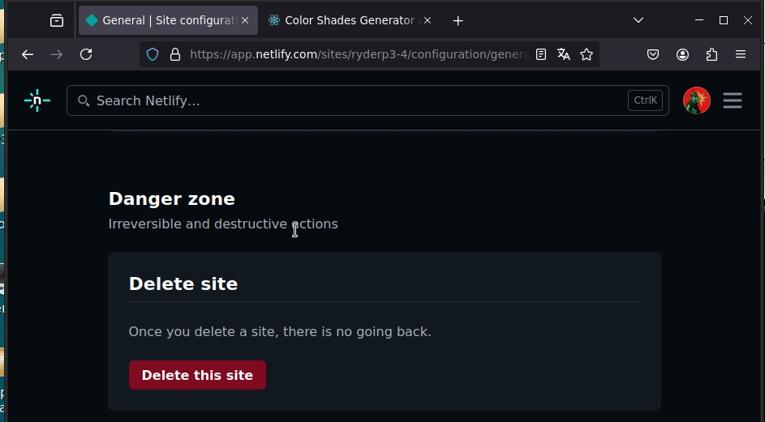
y ademas borramos la carpeta de la aplicación que hemos creado antes.
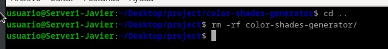
ahora nos descargamos el repositorio de la aplicación que vamos a desplegar en netlify en formaoto .zip con el siguiente comando
wget https://github.com/StackAbuse/color-shades-generator/archive/refs/heads/main.zip
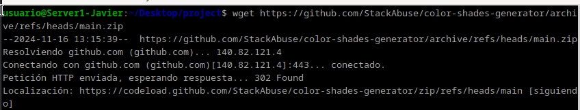
Creamos la carpeta de la aplicación y descomprimimos el archivo .zip en la carpeta con el siguiente comando. Atencion a que se descomprime en la carpeta correcta.

Tambien debemos crear un repositorio en github para poder desplegar la aplicación en netlify. Donde debemos subir el contenido de la carpeta de la aplicación.

Ahora debemos enlazar github con netlify para poder desplegar la aplicación.
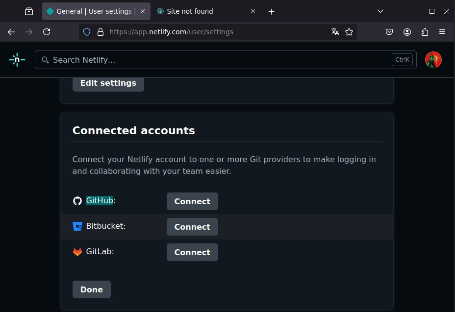

Debemos enlazarlo exclusivamente con el repositorio de la aplicación.
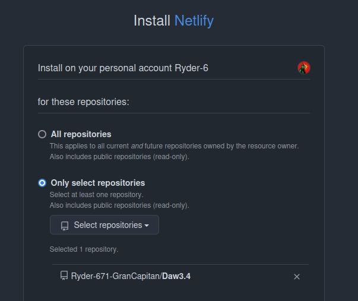
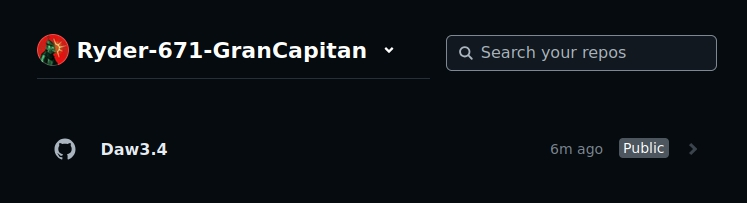
Ahora vamos a desplegar la aplicación en netlify dandole nombre, no necesitamos modificar nada
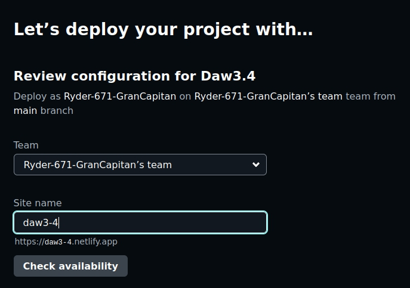
desplegamos la aplicación
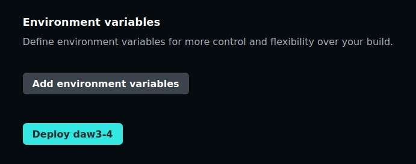
tras unos minutos podremos acceder a la aplicación desplegada en netlify.
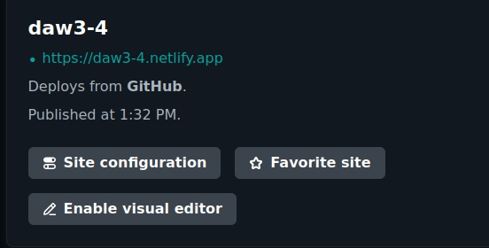

por ultimo modificamos robots.txt para que no se indexe la pagina en los motores de busqueda.